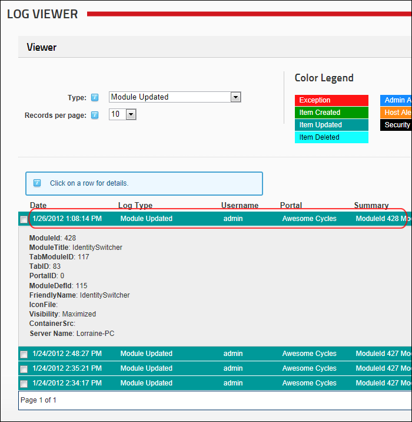

<<<<<<< HEAD
=======
>>>>>>> 72_release
Viewing Event Details
How to display a detailed report of a logged event.
<<<<<<< HEAD
- Navigate to Admin >
 Event Viewer - OR - Navigate to a Log Viewer module.
Event Viewer - OR - Navigate to a Log Viewer module.
=======
- Navigate to Admin > Event Viewer - OR - Navigate to a Log Viewer module.
>>>>>>> 72_release
- Expand the Viewer section.
- Optional. At Type, select the required event type to filter records.
- Click on a record to expand the record and see the detailed report.
- Optional. Click the record a second time to close it.
